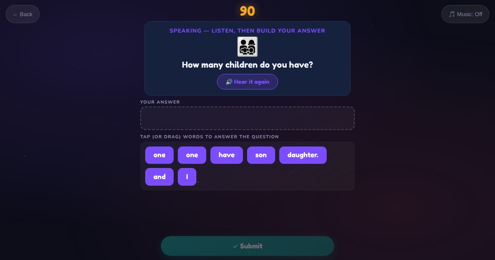

For teachers and tutors
About Speaking Game
Practice for common conversation questions. The learner hears a question, like "Where do you live?", "What is your favourite food?", "Can you drive?" or "How was your weekend?", and builds a full answer from word tiles, like "On Saturday, I stayed at home." The answer is read aloud afterwards so the learner can say it too. In multiple choice the learner taps the right answer instead. To record their own voice, learners can use Speaking Practice on the home page.

How to play
- Listen to the question.
- Put the word tiles in order to make the answer.
- Hear the answer and say it.
Play it as a class
Choose Speaking Game in the Teacher Game, then ask each student the same question aloud.